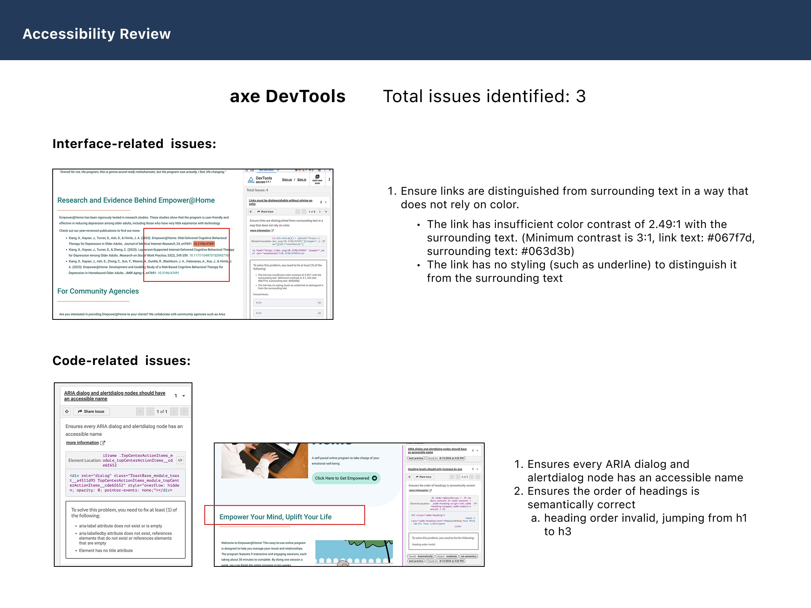
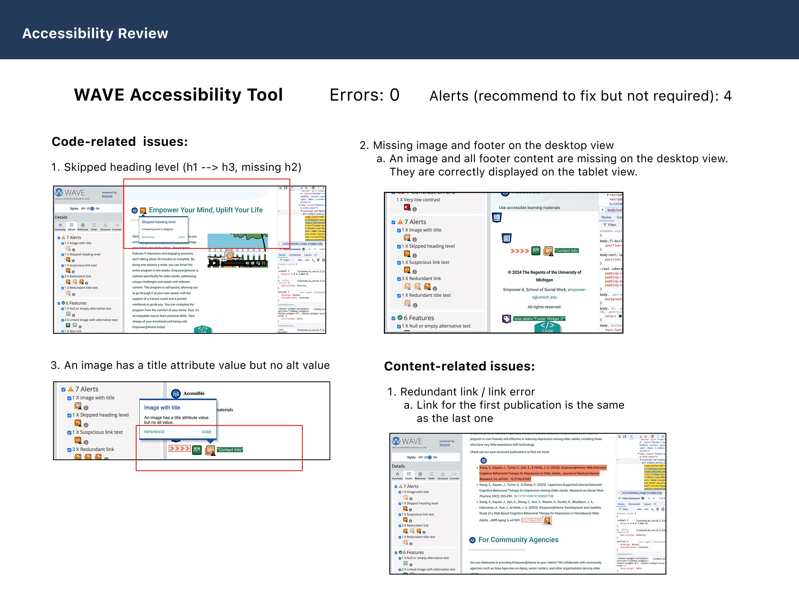
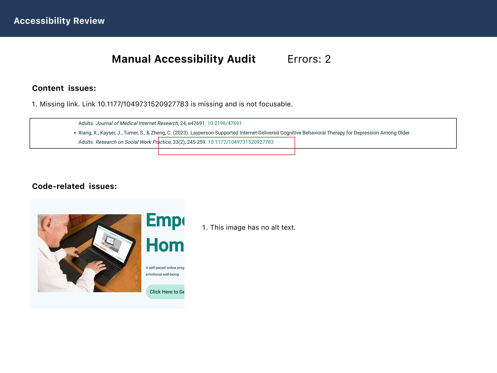
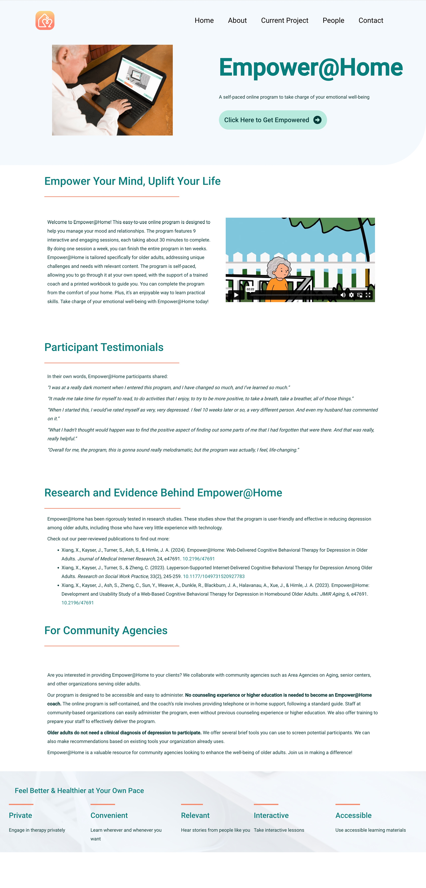
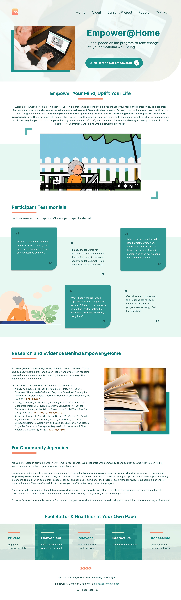
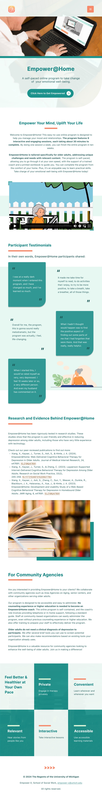
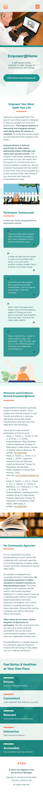

Overview
Empower@Home is a self-paced online program that helps older adults take charge of their emotional well-being, with a printed workbook and a trained coach. I redesigned the website, the workbook and coaching guide, and designed the provider dashboard with the developers.
Accessibility audit
Find what blocks senior and screen-reader users.
Website redesign
Fix the issues and make content visual.
Responsive build
Desktop, tablet, mobile — built in WordPress.
Book design
Workbook and coaching guide, reworked.
Start with what users can’t see
The audience is older adults, so the audit came first. Missing links and alt text are invisible on screen but break the experience for screen-reader users — I combined automated tools with manual checks for what tools miss.



Contrast and font size
Text and controls that are hard to read for ageing eyes.
Headings in order
So assistive technology can navigate the page.
Alt text and working links
Nothing important should exist only as a picture.
Less wall of text, more to look at
While fixing the accessibility issues I redesigned the whole site so information is more visual and inviting. Scroll inside each frame to compare the full pages.


One site, three screens
I designed desktop, tablet and mobile layouts, then built the site in WordPress with custom CSS. The new website is live.


A workbook people want to write in
Participants record exercises in a workbook; coaches use a matching guide. The old versions were outdated, dense and text-heavy — the goal was to update the content and make it easier to use.

What participants reported
The website and dashboard design were completed, and the updated workbook and coaching guide are printed and in use.
of the training program
reported satisfaction with the program
expect permanent improvement